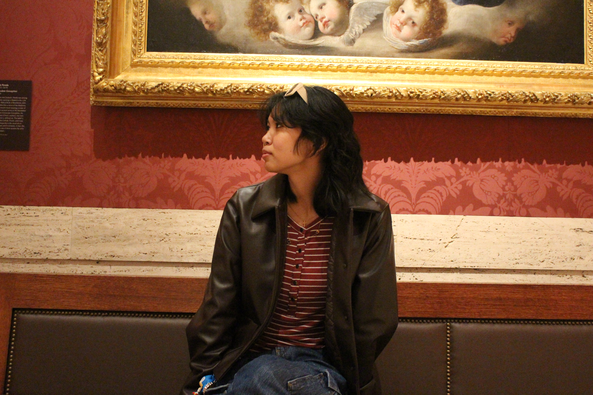

I'm a UX designer and Computer Science & Design student at Northeastern University with a passion for creating digital products that genuinely serve people's needs. Through user research, iterative prototyping, and usability testing, I design mobile and web experiences that help users accomplish their goals with ease and clarity. My technical background in front-end development and minor in Writing give me a unique understanding on what's feasible to build and how to communicate complex ideas simply. I'm drawn to projects where thoughtful design can improve everyday interactions, from helping students engage more deeply with their course readings to connecting people in their local communities.